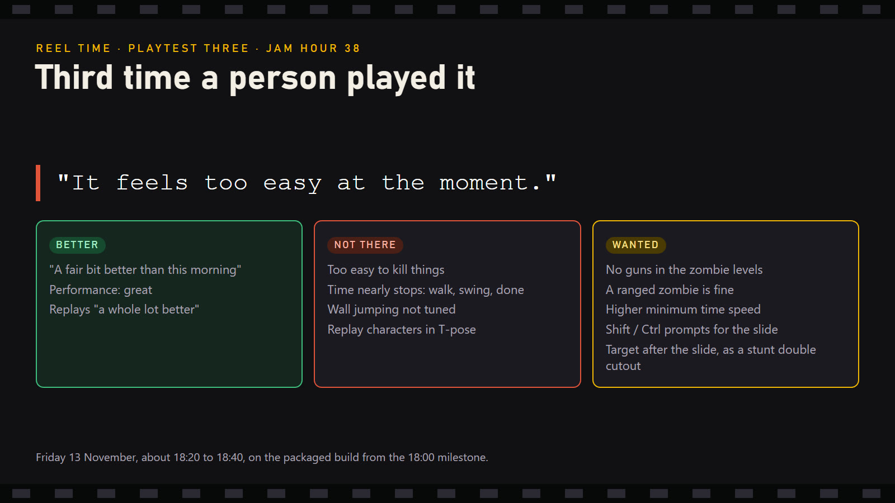

Playtest three: better, faster, and far too easy
Twenty minutes on the 18:00 package: the frame rate and the replays held up, but the fights are too easy, so tonight's work is a difficulty pass, no guns for zombies, and a clearer tutorial.
Day 2, Fri 13 NovHour 38
At 18:19 I sat down with the build from the 18:00 milestone, the zip the release session had already played from start to finish. Twenty minutes later I gave the Director my notes. The first line was the one I'd been hoping to say since this morning:
"Decent playtest. Definitely felt a fair bit better than this morning."
Performance was great, and the replay, the thing the whole game rests on, held:
"The replays are a whole lot better. Not necessarily perfect because the animations aren't quite there, but they are pretty good."

Too easy
The main note wasn't a bug. It was the balance:
"Because it's such a slow game, it feels like I'm just walking to a zombie, stopping, because then time basically stops, swing in, I just kill it. There's not much resistance."
Time only moves when I move. That's the theme, and it suits it, but it also means every fight can be lined up at leisure. I'm not ready to drop it ("it's cool, it really suits the theme"), so the first fix is the cheap one: raise the minimum time speed, so the world never quite stops while I think.
And the zombies shouldn't have guns to drop: "they're melee zombies, unless we have some sort of zombie that's ranged, which I'm totally fine for."
The tutorial
Small things in the screen test. The slide needs a Shift and a Ctrl prompt. The target I'm meant to hit sits back in the room I just slid out of, so I had to go back for it. And it's a blank board: "you don't really know exactly what to hit". It becomes a stunt double cutout, with the line "hit the stunt double".
Tonight's queue
I asked for about fourteen hours of work, since the crew runs on its own until the morning. The Director split it up straight away:
- Difficulty pass (the feel session): a higher minimum time speed, enemies that push back
- No guns in the zombie levels, plus a spitter zombie that fights at range (the NPC session, the second World session for placement)
- Tutorial rework (Gameplay): slide prompts, the target after the slide, the stunt double cutout
- Replay animations (the second Gameplay session): no more T-posed characters in the replay
- Movement polish (the feel session): wall jumping first
The next milestone is a full run, start to finish, at 23:00. That's when I'll see which of these has landed.